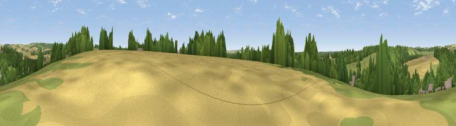

Viewpoint near Hambledon
#14383 in England · top 9% of its area beats it · near HambledonWhere it is
The exact computed spot (SU 97125 38575). Click the marker for map links.
The view, rendered

A 360° render of this exact spot computed from the terrain model, tree cover and land cover — summer colours, afternoon light, calibrated against photographs of famous viewpoints. Real trees, hedges and buildings will differ in detail.
The panorama
Grey silhouette: terrain skyline in each direction (720 bearings, Earth curvature and refraction included). Dashed green: skyline with trees (+15 m) and buildings (+8 m) as obstacles. Blue strip: how far the ground is visible on each bearing.
Where the view opens
Wedge length = distance to the farthest visible ground on that bearing (vegetation-aware). Rings at 10, 25 and 50 km.
What fills the view
65% woodland · 28% grassland · 6% cropland · 1% built-up
Angular shares of the visible panorama (visual magnitude), not map area. Landscape diversity 0.38 (0–1 Shannon).
Key numbers
More beautiful places nearby
The staircase of upgrades: each row has a higher view potential than everything closer. Driving times are estimates from straight-line distance, calibrated against real road routing — check an actual route before setting out.
| Place | Direction | Drive | Score |
|---|---|---|---|
| Viewpoint near Hascombe | E · 1 km | ~4 min | 62.0 |
| Temple of the Four Winds | WSW · 7 km | ~15 min | 65.4 |
| Viewpoint near Fernhurst | SSW · 11 km | ~20 min | 75.1 |
| Barlavington Down | S · 23 km | ~38 min | 77.3 |
| Viewpoint near Cocking | SSW · 23 km | ~38 min | 77.6 |
| Viewpoint near Cocking | SSW · 23 km | ~38 min | 78.3 |
| Linch Down | SSW · 24 km | ~40 min | 85.2 |
| Beacon Hill | SW · 26 km | ~42 min | 85.8 |
51.13822, -0.61312 · source: screening · position refined by local search. Computed location — check access rights before visiting.